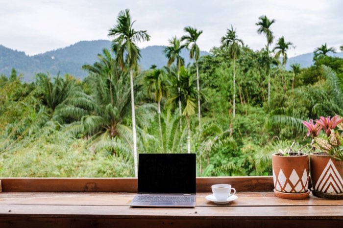

My main reasoning behind committing to a future career in tech can be found in the items listed below in no particular order. This list also serves as my main criteria when considering roles to apply for as a soon-to-be Uni Grad:
If there's anything I've learned from my past, it's that life can be unpredictable, one day you're performing on stage as a rapper in a band for a coastal festival, the next you're a full-time uni student and AI specialist for an advertising agency.
I have a specific idea of the ideal criteria for my future role/career. Freedom and experience is something I value highly, so working for a company that promotes travel would be awesome, even better if that means the option to work remotely from wherever I want in the world. I've also found a deep passion for building, coding, and technical knowledge. It's an interesting field, one that will get you hooked on the dopamine gained from constant problem-solving so if I had a role that encompassed both, I'd be a happy chap.
